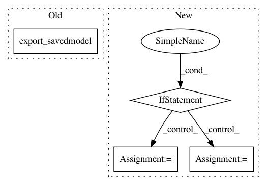

b5db074f69f553a99f827c5e9d8ba097302d8948,examples/mnist/keras/mnist_mlp_estimator.py,,main_fun,#Any#Any#,10
Before Change
features = tf.parse_example(serialized_tf_example, feature_spec)
return tf.estimator.export.ServingInputReceiver(features, receiver_tensors)
estimator.export_savedmodel(args.export_dir, serving_input_receiver_fn)
if __name__ == "__main__":
import argparse
After Change
tf.estimator.train_and_evaluate(estimator, train_spec, eval_spec)
else: // mode == "inference"
if args.input_mode == "spark":
tf_feed = TFNode.DataFeed(ctx.mgr)
def rdd_generator():
while not tf_feed.should_stop():
batch = tf_feed.next_batch(1)
if len(batch) > 0:
record = batch[0]
image = numpy.array(record[0]).astype(numpy.float32) / 255.0
label = numpy.array(record[1]).astype(numpy.float32)
yield (image, label)
def predict_input_fn():
ds = tf.data.Dataset.from_generator(rdd_generator,
(tf.float32, tf.float32),
(tf.TensorShape([IMAGE_PIXELS * IMAGE_PIXELS]), tf.TensorShape([10])))
ds = ds.batch(args.batch_size)
return ds
predictions = estimator.predict(predict_input_fn)
for result in predictions:
tf_feed.batch_results([result])
if __name__ == "__main__":
import argparse
from pyspark.context import SparkContext
from pyspark.conf import SparkConf
In pattern: SUPERPATTERN
Frequency: 3
Non-data size: 4
Instances
Project Name: yahoo/TensorFlowOnSpark
Commit Name: b5db074f69f553a99f827c5e9d8ba097302d8948
Time: 2018-08-27
Author: leewyang@gmail.com
File Name: examples/mnist/keras/mnist_mlp_estimator.py
Class Name:
Method Name: main_fun
Project Name: dhlab-epfl/dhSegment
Commit Name: b2fbc8b75787e58c77d212f499ce34fbd0c55f79
Time: 2017-07-13
Author: seg.benoit@gmail.com
File Name: train_fc-cnn.py
Class Name:
Method Name:
Project Name: dhlab-epfl/dhSegment
Commit Name: 854d78a7d7a60bf464d435a1468db85c573a6cd2
Time: 2018-10-04
Author: seg.benoit@gmail.com
File Name: train.py
Class Name:
Method Name: run